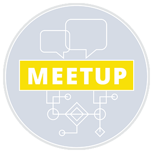

DE WERELD SAMEN INSPIREREN
Wij zijn een community van software engineers
Flock. is een community waar software engineers vol passie samenwerken. We delen kennis, inspireren elkaar en maken samen mooie software.
Het allerbelangrijkste is dat jij kan doen wat je leuk vindt.
Iedere twee weken op een dag samenwerken met de community van software engineers.
Onze Flock. community borrels zijn op: 10 januari, 18 april, 20 juni, 10 Oktober.

Flock organiseert samen met haar partners ING, bol.com en Schiphol meetups.